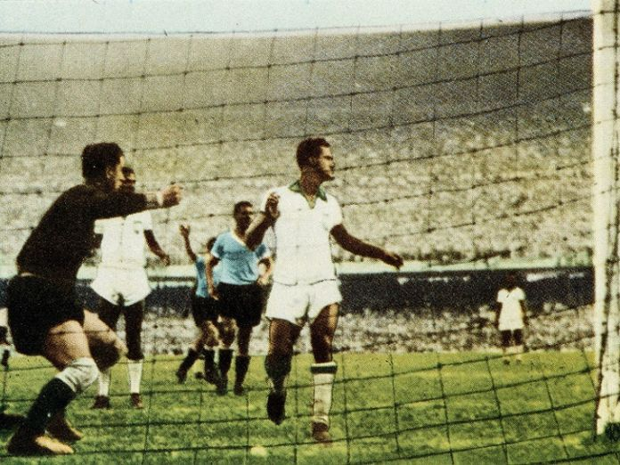

4.ª edición
El Maracanazo
Copa Mundial de la FIFA Brasil 1950
24 de junio – 16 de julio de 1950
País sede: Brasil 🇧🇷
13 selecciones
22 partidos
Datos generales del torneo
- País sede: Brasil 🇧🇷
- Ciudades sede: Río de Janeiro, São Paulo, Belo Horizonte, Curitiba, Porto Alegre, Recife
- Estadios: 6 (incluyendo el legendario Maracaná)
- Selecciones participantes: 13 (se esperaban 16)
- Partidos jugados: 22
- Goles anotados: 88
- Campeón: Uruguay 🇺🇾
- Subcampeón: Brasil 🇧🇷
- Tercer lugar: Suecia 🇸🇪
- Cuarto lugar: España 🇪🇸
- Máximo goleador: Ademir (Brasil, 8 goles)
Jugadas y momentos destacados
Brasil 1950 es recordado por la mayor sorpresa en la historia del fútbol:
el “Maracanazo”, cuando Uruguay venció 2–1 a Brasil ante casi 200 000 espectadores.

Resumen del torneo
-
Fue el primer Mundial tras la Segunda Guerra Mundial (último había sido en 1938).
-
El formato no tuvo final única: los ganadores de los grupos avanzaban a un
cuadrangular final de todos contra todos.
-
Brasil llegó al último partido necesitando solo empatar contra Uruguay;
la prensa ya lo proclamaba campeón.
-
Uruguay remontó para ganar 2–1 con gol decisivo de Alcides Ghiggia,
en lo que se conoce como el Maracanazo.
-
Fue el partido con la mayor asistencia en la historia del fútbol:
entre 173 000 y 200 000 personas en Maracaná.
Fase final (cuadrangular)
Resultados principales
- 🇧🇷 Brasil 7–1 Suecia 🇸🇪
- 🇺🇾 Uruguay 3–2 Suecia 🇸🇪
- 🇧🇷 Brasil 6–1 España 🇪🇸
- 🇺🇾 Uruguay 2–2 España 🇪🇸
Partido decisivo
Uruguay campeón del mundo
Selecciones participantes por grupo
Grupo 1
- 🇧🇷 Brasil
- 🇲🇽 México
- 🇨🇭 Suiza
- 🇷🇾 Yugoslavia
Grupo 2
- 🇪🇸 España
- 🇬🇧 Inglaterra
- 🇨🇬 Chile
- 🇺🇸 Estados Unidos
Grupo 3
- 🇸🇪 Suecia
- 🇮🇹 Italia
- 🇵🇾 Paraguay
Grupo 4
Partido decisivo: Brasil vs Uruguay
Brasil 1–2 Uruguay.
El partido más impactante en la historia del fútbol.
Ghiggia marcó el gol del título y silenció al Maracaná.
Brasil 🇧🇷 – Alineación
- DT: Flávio Costa
- Barbosa (POR)
- Augusto
- Juvenal
- Bigode
- Danilo
- Bauer
- Friaça
- Zizinho
- Jair
- Ademir
- Chico
Uruguay 🇺🇾 – Alineación
- DT: Juan López Fontana
- Roque Máspoli (POR)
- Matías González
- Schiaffino
- Tejera
- Varela (C)
- Obdulio Varela
- Giglia
- Ghiggia
- Míguez
- Rubén Morán
- Ernesto Vidal
Reseña general
La Copa Mundial de 1950 marcó el regreso del fútbol internacional tras 12 años sin Mundial
por la Segunda Guerra Mundial.
Brasil organizó un torneo moderno, con estadios gigantes y asistencia masiva.
Pero la historia recuerda principalmente el Maracanazo, la mayor sorpresa jamás vista
en el deporte rey.